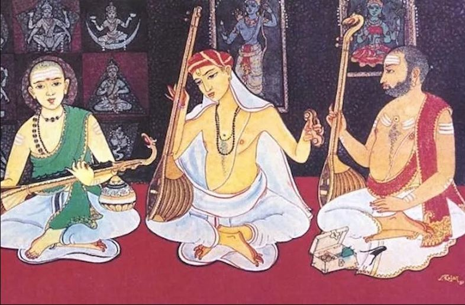

Welcome to Carnatic Sangeetha Website
The extensive website where you can find everything you need to know about Carnatic Music.

What is a Raaga?
A Raaga is a melodic framework in Carnatic music — a set of rules governing which swaras (notes) can be used, in what order they may ascend and descend, and which phrases give the melody its distinct mood and character. Every raaga has its own personality, built from an Arohana (ascending scale) and Avarohana (descending scale). Explore the two families of raagas below, or search the full database.
Combinations
There are 16 types of swaras in Carnatic music. From Sa to Ga, 6 combinations of Ri and Ga are possible (R2 and G1 can never appear in the same raaga since they share a swarasthana — the same applies to R3 and G2). The same is true from Pa to Ni with Da and Ni. That gives 6 × 6 = 36 combinations, and since Ma also comes in two types (Shuddha and Prathi), the total comes to 36 × 2 = 72 Melakartha Raagas.
Definition of a Melakartha Raaga
A Melakartha Raaga (also called a Janaka Raaga) is a raaga where all seven swaras are present, in the correct order, in both the Arohana and Avarohana:
For example, Mohanam (Aro: S R G P D Ṡ) is not a Melakartha raaga because it doesn't have all seven swaras. Shri Raaga has all seven swaras, but only in its Avarohana and not in standard order — so it isn't a Melakartha raaga either.
The 72 Melakarthas
Click any raaga below to see its full details, including its chakra, arohana, avarohana, and compositions on this site.
Chakras
The 72 melakarthas are divided into 12 groups of 6 called Chakras. Every raaga within a chakra shares the same Ri and Ga. Each chakra is named after something that comes in that number:
Definition of a Janya Raaga
'Janya' means born. A Janya Raaga is derived from — "born out of" — a Melakartha raaga. Unlike its parent, a Janya raaga will not have all 7 swaras in the standard S R G M P D N Ṡ order in both its arohana and avarohana.
Types by Swara Count
- Sampurna — 7 swaras
- Shadava — 6 swaras
- Audava — 5 swaras
Since a janya can mix any of these on the way up and down, you get combinations like Sampurna-Shadava, Shadava-Audava, and so on — each with its own count of possible raagas. Across every melakartha, this yields 483 possible combinations per parent, and 483 × 72 = 34,776 possible Upanga raagas in total (only a fraction of which are actually in musical use).
Classification of Raagas
Upanga Raagas
Upanga raagas don't deviate from swara order (R always after S, D always after N, etc.) and use only swaras already present in their parent melakartha — they simply use fewer than 7.
Aro: S R G M P D N Ṡ Ava: Ṡ D P M G R S
Bhashanga Raagas
Bhashanga raagas borrow "foreign" swaras (Anya Swaras) that are not part of their parent melakartha's set.
Aro: S G₂ R₂ G₂ M₁ P D₂ P Ṡ Ava: Ṡ N₂ D₂ P M₁ G₂ R₂ S
Anya swaras used: G₃, D₁, N₃
*Different schools of thought place Ananda Bhairavi under different parent melakarthas.
Vakra Raagas
Vakra raagas don't move strictly note-by-note in order — their swaras appear "crooked," mixed and matched rather than sequential.
Aro: S R G M P M R P Ṡ Ava: Ṡ N P M R G R S
Note: whether a raaga is Upanga, Bhashanga, or Vakra isn't always mechanically obvious from the notation alone — some classifications depend on performance tradition. These are tagged by hand in the database as we go, so not every raaga will show a classification yet.